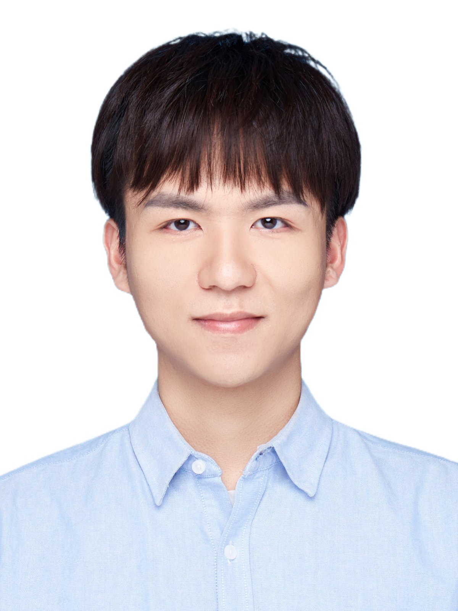

Jiaxuan LI 李嘉烜Ph.D. Student
Machine Perception Group, |
 |


Biography
I am currently a first year (2022-2025) Ph.D. student in Machine Perception Group, Department of Creative Informatics, the University of Tokyo (UTokyo), supervised by Prof. Hideki Nakayama. Before that, I received the M.Eng. degree in Electronic Engineering from Shanghai Jiao Tong University (SJTU) in 2022, supervised by Prof. Yuye Ling, and the B.Eng. degree in Communication Engineering from Shanghai University (SHU) in 2019, supervised by Prof. Zhi Liu.
My research interest include Medical Image Analysis, Computer Vision and Deep Learning.
Publications
Journal Papers
-
Multi-scale GCN-assisted two-stage network for joint segmentation of retinal layers and disc in peripapillary OCT images [paper] [code] [dataset]
Jiaxuan Li, Peiyao Jin, Jianfeng Zhu, Haidong Zou, Xun Xu, Min Tang, Minwen Zhou, Yu Gan, Jiangnan He, Yuye Ling*, and Yikai Su.
Biomedical Optics Express (BOE), 2021.
Conference Papers
-
Multi-scale sparse representation-based shadow inpainting for retinal OCT images [paper]
Yaoqi Tang, Yufan Li, Hongshan Liu, Jiaxuan Li, Peiyao Jin, Yu Gan, Yuye Ling*, and Yikai Su.
SPIE Medical Imaging (SPIE MI 2022), San Diego, USA.
-
A GCN-assisted deep Learning method for peripapillary retinal layer segmentation in OCT images [paper]
Jiaxuan Li, Yuye Ling*, Jiangnan He, Peiyao Jin, Jianfeng Zhu, Haidong Zou, Xun Xu, Yu Gan, and Yikai Su.
SPIE Photonics West (SPIE PW 2021), San Francisco, USA.
Honors & Awards
| Support for Pioneering Research Initiated by Next Generation (SPRING GX), the University of Tokyo, Apr. 2022- Mar. 2025 |
| Outstanding Graduates of Shanghai Jiao Tong University, 2022 |
| COSCO Shipping Scholarship, Shanghai Jiao Tong University, 2021 |
| Second Prize, "Huawei Cup" the 17th China Post-Graduate Mathematical Contest in Modeling, 2020 |
| Academic Scholarship, Shanghai University, 2016 |
Teaching
| 2020-2021 | Spring | TA in AI2614 Digital Signal and Image Processing |
| 2019-2020 | Spring | TA in EE367 Fundamentals of Communication Circuits |
© Jiaxuan Li | Last updated: Mar. 05, 2022